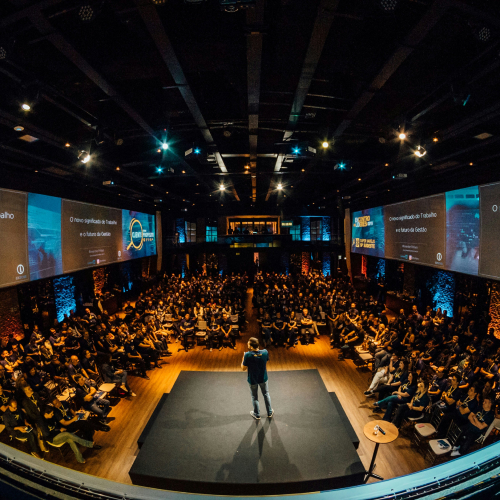

> ESG경영 > 인권경영
인권경영
Human rights management
운영체계
인간 존엄의 가치를 실현하여 모든 임직원이 존중받는 기업문화 구현
-
- 인권경영 체계구축
-
- 인권교육 강화
-
- 다양성·상호존중 문화 조성
주요 활동

- 역량 강화
- - 임원/팀장, 관리자, 신입사원 등 계층별 교육 실시
- - 친환경/스마트 분야 교육과정, 고객 대응 역량강화과정, DT 역량강화 프로그램 운영
- - 신입사원 OJT과정인 '해비(海飛) the Square'에 Udemy 도입, 온라인 직무아카데미 '배우자' 플랫폼 운영
- 임직원 존중
- - 전 임직원 대상 실시성희롱 및 직장내 괴롭힘 예방 교육
- - 인권 관련 고충 게시판 제보 및 신고를 위한 익명 게시판과 인권침해 신고센터 운영
- - 해피웰빙센터를 운영하고 상담심리사를 통해 심리적 고충에 대한 전문 상담 서비스 제공
조직 문화
-
- (Colleagues)
- 함께하는 동료
-
- (Work)
- 즐거운일
-
- (Company)
- 자랑스러운 회사
| 이니셔티브 | 설명 |
|---|---|
| Change Agent 제도 운영 | 핵심 실무계층으로 구성한 Change Agent를 통해 조직 변화 및 혁신 구축 |
| 선택적 근로시간 제도 운영 | 개인 주도적인 근무 시간 관리를 통해 일과 삶의 균형 확보 |
| 조직문화 만족도 조사 | 조직문화의 강점과 개선점을 찾아 지속적인 업무 환경 개선 |